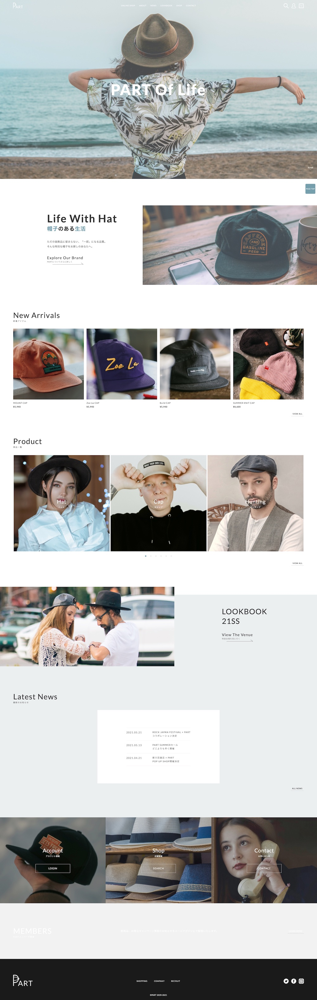
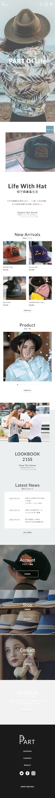

帽子専門のアパレル自社ECサイトをイメージして作成しました。
URL
https://tetsuya-nishikawa.github.io/part/
ターゲット
年代を問わず、帽子が好きで少し高級な商品を求めた人をターゲットにしています。
デザインについて
どのような商品を扱うブランドか一目で分かり、尚且つ着用イメージが湧きやすくなる導線を意識してデザインしました。
「LOOKBOOK 21SS」ページへ飛ぶリンク付近は、季節のイメージに合わせて明るいライトブルーの背景色を使い、また資格効果によってユーザーの体感温度を下げることで、暑くなる時期の売上を伸ばす販促効果も狙っています。
サイトに使用した画像は、商品写真を除く画像の彩度を少し低くすることで、カジュアルアイテムである帽子が高級映えするように演出しています。
フォントは“Lato”を使用し、モダンなイメージと帽子の丸みを帯びたシルエットに書体を合わせることで、サイト全体の統一感を出すようにしました。
コーディングについて
ナビゲーションメニューやボタンのhoverアクションを分かりやすいデザインにすることでユーザビリティを高めました。またtransitionプロパティによって変化時間を若干遅くし、高級感を演出しています。